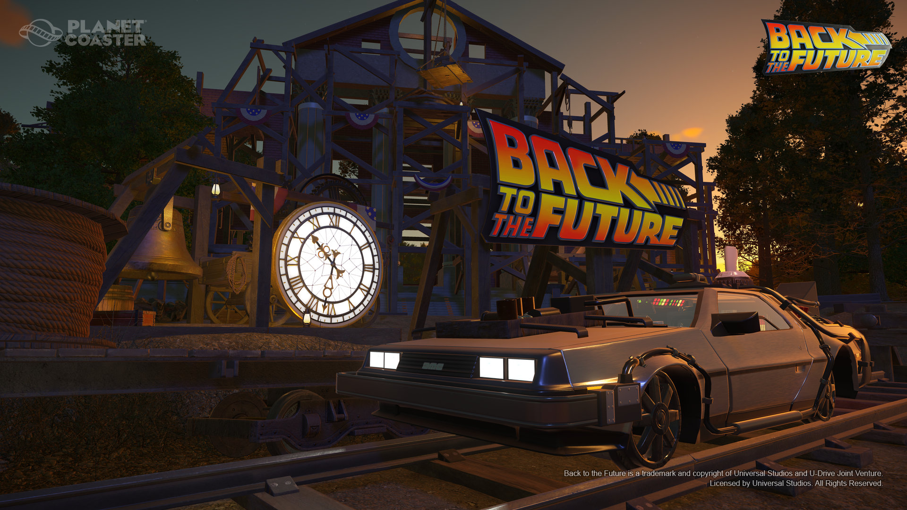

Updates/DLC:
Back to the Future™ Time Machine Construction Kit
This is heavy! Visit the past, present and future with the Planet Coaster Back to the Future Time Machine Construction Kit. The Back to the Future Construction Kit features in-game replicas of the Delorean Time Machine in its original 1985 form, or in its 2015, 1955 and 1885 variants, with optional standard tires, ‘hover’ wheels, white-rimmed classic tires, or railway wheels. With the Back to the Future Construction Kit all four cars will be made available in-game as 1:1.2 scale scenery pieces and 1:1.8 scale ‘kitbash’ models which can be disassembled and re-assembled however you choose. The Back to the Future Construction kit also includes a karting replica for the ‘Speed’ go-kart track, branded logo sign and bonus animated FX pieces. Get OUTATIME in Planet Coaster today! *Requires Planet Coaster game (sold separately)
